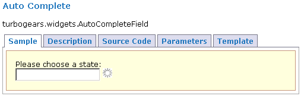
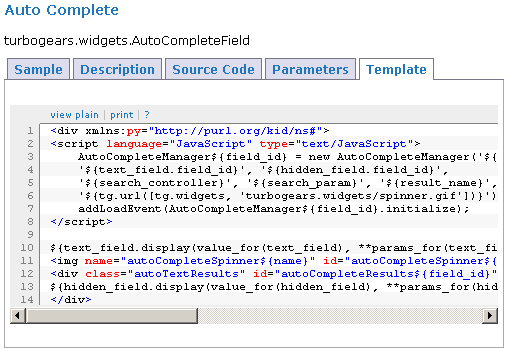

WidgetBrowser is an application which collects all available TurboGears Widgets installed on your system and allows you to preview all TurboGears Widgets available to you easily and view their documentation and source code.
You can access WidgetBrowser by opening it directly from the toolbox.
Let’s take the AutoComplete widget as an example.
The Sample Tab displays the widget as it would look in your application. It is fully functional, so feel free to type a few letters to test the functionality. To see the source code that’s being used to display the sample, flip over to the appropriately named Source Code tab. It’s not always obvious what a particular widget does given only the preview and source, so the widget author can provide both a Description and the list of Parameters, which the WidgetBrowser displays.
TurboGears widgets were designed to provide common behavior without necessarily being tied to a particular view. To this end, it’s possible to modify the templates and the Template tab provides you with a starting point to modify as you see fit.
In summary:
| Tab Name | Note | Description |
|---|---|---|
| Sample | An example of a widget instance. | |
| Source Code | The Python code needed to invoke the widget. | |
| Template | The Kid template for the sample. | |
| Description | optional | Describes the behavior for unusually-behaving (read “Ajax”) widgets. |
| Parameters | optional | Lists parameters for widgets which take extra parameters. |
TurboGears attempts to provide a solid collection of the most common widgets, but can’t cover all possible widgets. To that end the TurboGears Cogbin provides a collecting point for more exotic widget collections.